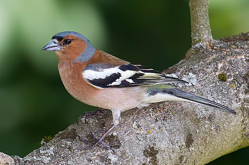

```{r}
hist(rnorm(100))
```26 March, 2024
To introduce you to Quarto for creating reproducible reports in a variety of output formats. You will also get more practice organising analyses and importing, summarising and plotting data.
🎬 Instruction to do something
The successful student will be able to:
explain what Quarto and markdown are
appreciate the role of the YAML header
set default code chunk behaviour and that for individual chunks
use headings, simple text formatting and special characters
add citations and references
use inline code to report results in text
create automatically numbered tables and figures and cross reference them in text
What is your process for getting your summary data, statistical results, tables and figures in to a report / paper?
What do you do when you get additional data that increases your sample sizes?
How easy is it to reorder your figures and tables?
What do you do if you formatted for one journal and now have to submit to another?
Typically people analyse, plot and write up in different programs.
Graphs are saved to files and inserted into the final report.
Reordering figures, tables and equations means updating everywhere they are cross-referenced.
If the data change, the author must repeat the entire process to update the report.
Manual labour ….. error prone
An open-source scientific and technical publishing system that allows you to create dynamic reproducible reports in a variety of output formats.
Next generation RMarkdown. Many new features, greater standardisation and more flexibility.
Mutli-language Python, R, Julia, and Observable.
Include auto-numbered and cross-referencable equations, figures and tables
Integrates with Zotero
Quarto mixes text and code to create dynamic reports
The YAML header sets the default behaviour for the document and is between --- at the top of the document
R Code chunks are between ```{r} and ``` and chunk options determine how/whether they run whether code/output is included in the rendered document
You can run code chunk interactively or through rendering
Comments: |#, # in chunk options, <!-- in text --> but use Ctrl+Shift+C
Markdown is a plain text format that is designed to be easy to write, and, even more importantly, easy to read
| Markdown Syntax | Output |
|---|---|
| italics, bold | |
| bold italics | |
| superscript2 | |
| subscript2 | |
verbatim code |
| Markdown Syntax | Output |
|---|---|
Header 1 |
|
Header 2 |
|
Header 3 |
|
Header 4 |
| Markdown Syntax | Output |
|---|---|
| Quarto | |
|  |
| Markdown Syntax | Output |
|---|---|
|
| Markdown Syntax | Output |
|---|---|
|
Use $ delimiters for inline math and $$ delimiters for display math. For example:
| Markdown Syntax | Output |
|---|---|
| inline math: \(E=mc^{2}\) | |
|
display math: \[E = mc^{2}\] |
“Divs” are used to group content together and apply styling to that content.
For example, callouts
:::{.callout-note}
Note that there are five types of callouts, including:
`note`, `tip`, `warning`, `caution`, and `important`.
:::Note
Note that there are five types of callouts, including: note, tip, warning, caution, and important.
For example:
This content is smaller
🎬 File | New Project | New Directory | Quarto Project
Browse to an appropriate place and give your project a name.
I used wr-chaff
Choose Engine: Knitr
Turn visual markdown editor off (for now)
🎬 Change some RStudio settings. Tools | Global Options
General:
Turn off the three “Restore ….” options
Turn “Save workspace to .RData on exit” to Never
R Markdown:
wr-chaff.RProj - what makes the folder an RStudio project
_quarto.yml - the configuration file
wr-chaff.md - the main document containing some template text
🎬 Hit Render (Ctrl-Shift-K)
Note that wr-chaff.html is created and opened in the Viewer pane
(may need to set in Global options to open in Viewer pane)
🎬 Add your name, and a title. Also add the engine and format
🎬 Add a code chunk (Ctrl-Shift-I) for a simple graph.
🎬 Hit Render (Ctrl-Shift-K)
🎬 Set some default code chunk options. I recommend these for reports
---
title: "The difference in mass between subspecies of common chaffinch."
author: "Emma Rand"
engine: knitr
format:
html
execute:
echo: false
include: true
error: false
message: false
warning: false
---🎬 Hit Render (Ctrl-Shift-K)
echo: false code will not be included in outputinclude: true output will be includederror: false halt render if a code error occursmessage: false messages and warnings will not be includedwarning: false🎬 Experiment with change the options and re-rendering. Try misspelling rnorm to see the error option in action.
🎬 Delete everything except the YAML header.
🎬 Add headings for: Introduction, Methods, Results, Discussion, and References
🎬 Add a code chunk for package loading
#| label: load-packages is a code chunk label. These are useful (here) and essential (later) for cross-referencing.
🎬 Add this test to the Introduction
A number of subspecies of the common chaffinch, Fringilla coelebs, have been described based principally on the differences in the pattern and colour of the adult male plumage. Two of groups of these subspecies are the “coelebs group” that occurs in Europe and Asia and the “canariensis group” that occurs on the Canary Islands.
🎬 Make the species name italic
🎬 Make “common chaffinch” a link to https://en.wikipedia.org/wiki/Common_chaffinch
🎬 Make a folder called data-raw
🎬 Save chaff.txt to data-raw
🎬 Add a code chunk with:
🎬 Run chunks interactively
🎬 Render
🎬 Add a code chunk with:
🎬 Render
Notice the chunk labels being used in “Background Jobs”
🎬 Add this text to the Introduction
We randomly sampled 20 F. c. coelebs males and 20 F. c. palmae males and determined their mass with spring scales. Analysis was carried out with R and tidyverse packages.
It would be good to to hard code those numbers in the text. What if we get more data. Or we just misremember or mis-type the numbers?
🎬 Add a code chunk with:
Inline code is how you include a variable value, like a sample size, mean or statistical result, in a section of text.
In fact, any code output can be inserted directly into the text of a .qmd file using inline code.
Inline code goes between `r` and ` .
For example by writing:
The squareroot of 2 is `r sqrt(2) `
you will get:
The squareroot of 2 is 1.4142136
🎬 Replace the sample sizes in the Methods text with inline code
🎬 Render
🎬 Add a code chunk to the Results section with:
```{r}
#| label: fig-chaff
ggplot() +
geom_point(data = chaff, aes(x = subspecies, y = mass),
position = position_jitter(width = 0.1, height = 0),
colour = "gray50") +
geom_errorbar(data = chaff_summary,
aes(x = subspecies, ymin = mean - se, ymax = mean + se),
width = 0.3) +
geom_errorbar(data = chaff_summary,
aes(x = subspecies, ymin = mean, ymax = mean),
width = 0.2) +
scale_y_continuous(name = "Mass (g)",
limits = c(0, 30),
expand = c(0, 0)) +
scale_x_discrete(name = "Subspecies",
labels = c("Canariensis", "Coelebs")) +
theme_classic()
```🎬 Render
Note: It is automatically labelled as Figure 1!
The label of the code chunk is important when creating figures because it is used to cross reference the figure in the text. We give cross references with @ followed by the label of the code chunk.
That is starts with a fig- prefix also matters - this is what determines what is treated as a figure numbered in order of appearance.
🎬 Add a sentence with a cross reference to the figure:
Canariensis have higher mass than coelebs. See @fig-chaff
There are two ways to add a legend:
Add the fig-cap chunk option: fig-cap: "Mass of chaffinches" to the code chunk.
Use a div.
You can include inline code, citations, special characters and formatting
You can more easily make multipanel figures
🎬 Add a div by adding:
removing the fig-cap option and the label option
::: before and after the code chunk
placing the label after the opening ::: like this: ::: {#fig-chaff} Note the # is important for numbering
Putting the legend text between the code chunk and the closing :::
In the example figure legend I have included inline code and formatting
🎬 Add a chunk options fig-width, fig-height and fig-align to the code chunk:
```{r}
#| fig-width: 3.5
#| fig-height: 3.5
ggplot() +
geom_point(data = chaff, aes(x = subspecies, y = mass),
position = position_jitter(width = 0.1, height = 0),
colour = "gray50") +
geom_errorbar(data = chaff_summary,
aes(x = subspecies, ymin = mean - se, ymax = mean + se),
width = 0.3) +
geom_errorbar(data = chaff_summary,
aes(x = subspecies, ymin = mean, ymax = mean),
width = 0.2) +
scale_y_continuous(name = "Mass (g)",
limits = c(0, 30),
expand = c(0, 0)) +
scale_x_discrete(name = "Subspecies",
labels = c("Canariensis", "Coelebs")) +
theme_classic()
```We are going to add another figure, this time a figure with two panels (it’s an unnecessary figure for this data, but works for demonstration).
The figure will be two histogram of the mass of each subspecies.
We will again use a div which will contain two code chunks, one for each graph.
Their will be a label on the div for the figure as a whole and labels on each of the chunk to cross reference the sub figures.
Figure layout information will be added to the div.
🎬 Add these two chunks to the Results section below the last figure (make sure you’re outside the last div)
chaff |> filter(subspecies == "coelebs") |>
ggplot(aes(x = mass)) +
geom_histogram(bins = 10) +
theme_minimal()If you render, you’ll see that the two figures are added as separate figures.
To make them into one figure we need to use a div.
🎬 Add the div a round those chunks
::: {##fig-histograms layout-ncol=2}
……
:::
🎬 Render
🎬 Add a figure legend to the two panel figure
🎬 Add a sentence with a cross reference to the figure. Can you cross reference the sub figures?
🎬 Change the order of the figures